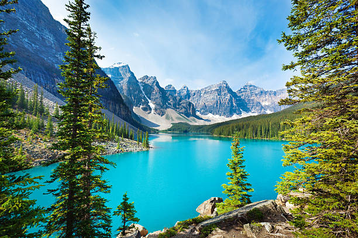

We work around the world to protect nature and preserve life for future generations.
REGIONS
The Nature Conservancy impacts conservation efforts in 69 countries around the world. We work to preserve the animals, plants and natural communities that represent the diversity of life on Earth-by protecting the lands and waters they need to survive. We work with local governments, communities, and partner organizations in sharing our science-based and collaborative methods to ensure each region's needs-for people and for nature-are best met.AFRICA
Learn how The Nature Conservancy works on this ancient continent in seven countries-Kenya, Tanzania, Gabon, Zambia, Namibia, Seychelles, and South Africa-and see how working in Africa has taught new lessons to the Conservancy.
AUSTRALIA
From the grasslands of Northern Australia to the biodiversity-rich Gondwana Link, the Conservancy is working with partners-and combining traditional knowledge with cutting-edge science-to protect the Land Down Under's most endangered natural resources.
ASIA AND THE PACIFIC ISLANDS
From supporting local communities who are working to conserve their natural resources in Micronesia, to researching with partners how climate change is affecting a sacred glacier in China, we are working to protect the myriad of species and habitats-and the communities that depend on them-in this diverse region.
CARIBBEAN
Learn how The Nature Conservancy is working with local governments, partners and communities to create a network of marine parks across the Caribbean-nearly tripling the current amount of protected ecosystems in this region-as well as how our conservation science helped first responders into Haiti after the devastating Earthquake in early 2010. 
CENTRAL AMERICA
The Nature Conservancy is working in six countries in Central America to preserve an incredible diversity of plants, animals and habitats for future generations - by using innovative and collaborative methods.
NORTH AMERICA
From Canada to Mexico, California to Maine, The Nature Conservancy has a history of success in protecting nature to preserve life for future generations. We work to protect livelihoods and natural treasures in a place that represents almost 15 percent of the Earth's total land area.
SOUTH AMERICA
Learn how the The Nature Conservancy is working to preserve some of the world's most endangered forests and grasslands habitat-from the Atlantic Forest to the Cerrado-by protecting them from threats like invasive species, habitat loss and climate change.
EUROPE
The Nature Conservancy is developing partnerships with governments and organizations based in Europe and is focusing on sustainable development, climate change and strengthening public policy to catalyze conservation.